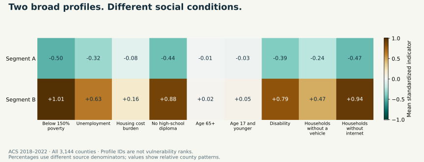

← Back to selected work
Population research · Social inequalities · Spatial intelligence
Population Vulnerability & Service-Access Segmentation
Different communities face different barriers. A transparent county-level analysis of economic conditions, household needs and transport/digital access proxies—with geographic maps, contextual insurance profiles and checks on assignment stability.
The planning question
A national average cannot describe every community.
A digital-only service or a uniform outreach plan can miss the different conditions shaping access. This project asks whether county social indicators form useful broad profiles—and how strongly the data support those labels.
The analysis combines CDC/ATSDR SVI 2022 county inputs derived from ACS 2018–2022, CDC PLACES 2024 modelled insurance-access estimates for 2022, and Census 2022 county boundaries. It is a historical U.S. area study, not an individual-risk classifier or a Nigerian validation study.
The social pattern
Two broad profiles, rather than an invented league table.

Nine percentages represent three equally weighted domains: economic conditions, household characteristics and access proxies. The profile IDs are ordered by county count, not by vulnerability rank. This is a custom segmentation of selected inputs, not a new official SVI index.
Profiles in original units
The contrast is social and digital, not simply old versus young.
Profile A: 2,097 counties with lower measured social barriers relative to this dataset. County medians are 19.7% below 150% of poverty, 13.8% households without internet and 8.5% adults without a high-school diploma.
Profile B: 1,047 counties with higher poverty and digital-barrier indicators. The corresponding medians are 31.4%, 22.9% and 16.1%. Disability and no-vehicle percentages are also higher; age-65+ medians are similar across the profiles.
These percentages have different source denominators and cannot be added. County summaries do not classify every resident or reveal neighbourhood-level variation.
Contextual access evidence
Insurance access was kept out of the clustering.
Median modelled lack of insurance among adults aged 18–64 is 6.6% in Profile A and 9.9% in Profile B. The app preserves the published PLACES intervals in each county briefing.
The comparison is contextual profiling, not independent validation: PLACES and the social inputs share underlying demographic/ACS information. It does not prove a causal effect. Insurance access does not directly measure service supply, travel time or quality.
Analytical judgment
Stable broad structure. Less certain boundaries.
The selected two-profile solution has a sampled silhouette of 0.269. Three profiles score 0.157; four to six create small groups that fail the explicit minimum-size screen. More labels would not automatically produce better evidence.
Across 40 state-block refits, median Adjusted Rand Index is 0.876, with a range of 0.550–0.969. Assignment agreement falls below 80% for 242 counties. Those boundary cases deserve indicator-level inspection.
Robust scaling gives an ARI of 0.624 against the reference; equal-feature weighting gives 0.845. Scaling choices materially affect some memberships. Resampling agreement is a conditional perturbation statistic, not a probability of being correct.
The interactive product
A map, a profile comparison and a county briefing.
Community atlas: filter states, profiles and agreement; inspect official county boundaries and export the scoped evidence. Large geographic areas are not treated as large populations.
Profile comparison: inspect standardized patterns alongside raw-percentage medians and contextual insurance distributions.
County briefing: review published indicators, assignment agreement, insurance estimates and questions for local investigation; download a concise briefing.
Evidence trail: inspect candidate model scores, all stability refits, specification sensitivity, SQL summaries, source checksums and join audits.
Limits and responsible use
Profiles inform questions. Local evidence informs action.
All 3,144 counties have complete inputs, contextual estimates and map boundaries. Missing source sentinels are handled explicitly, with no imputation. Facility locations, journey times and individual outcomes are not measured.
County averages hide within-county inequality. ACS margins of error and PLACES model uncertainty are not propagated into cluster assignments. Bootstrap stability is not held-out accuracy. The analysis does not prove intervention effects, allocate resources automatically or establish transferability to Nigeria.
Source and reproducibility
Follow the result from download to briefing.
The project includes recorded snapshot checksums, validated FIPS joins, complete model-selection tables, state-block and specification checks, executed SQL reports, processed county evidence and generalized boundary geometry. Eight evidence/application checks cover identifiers, domain weights, profiles, model selection, maps, SQL, duplicate joins and dashboard interactions.
Sources: CDC/ATSDR SVI, CDC PLACES 2024 and Census cartographic boundaries. No synthetic analysis data or personal health records are used.
Inspect and reproduce
Population insight with its uncertainty visible.
Explore the complete pipeline, maps, dashboard source, profile evidence and stability checks.